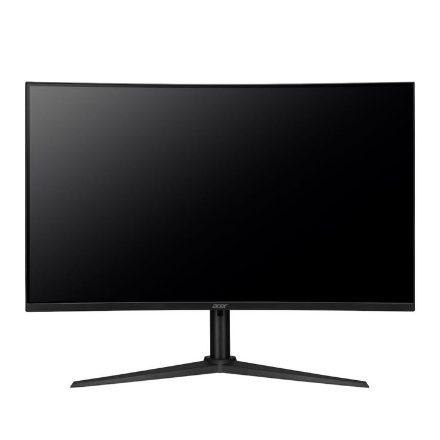
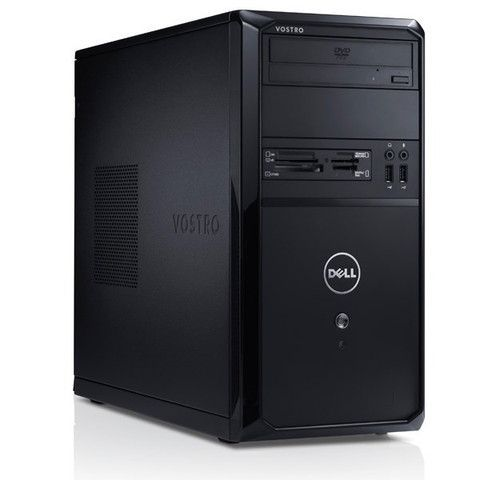
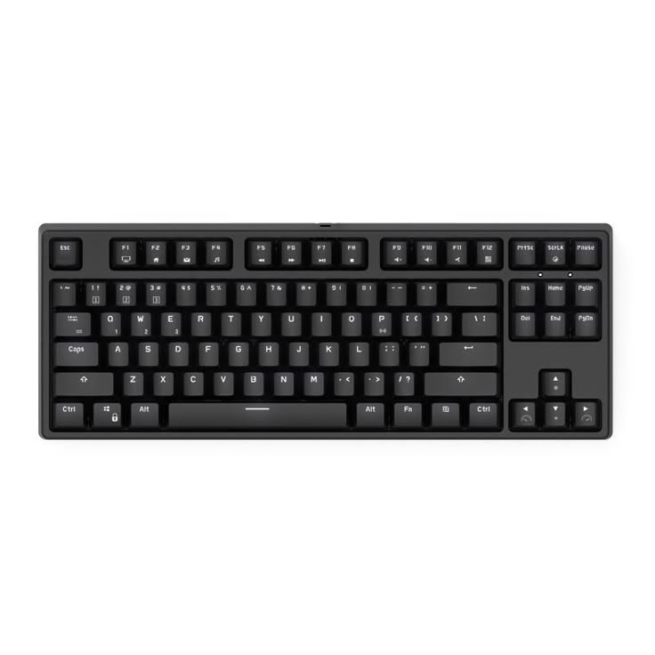
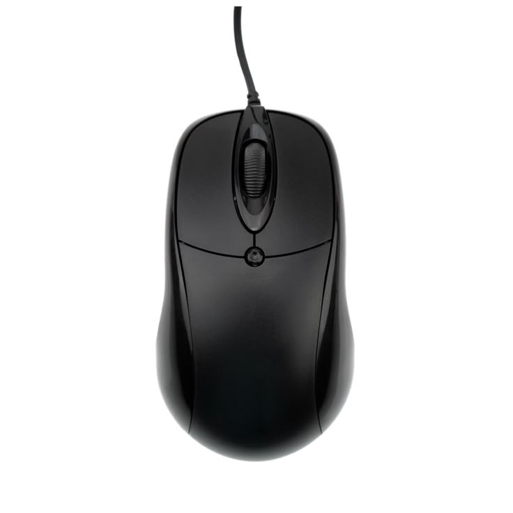
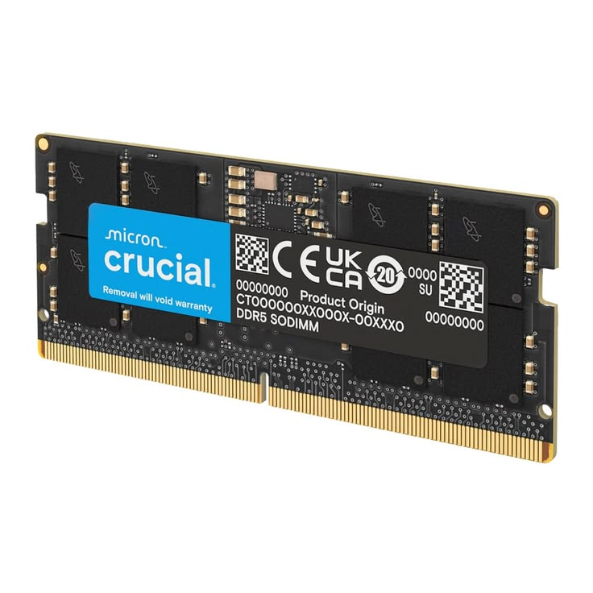
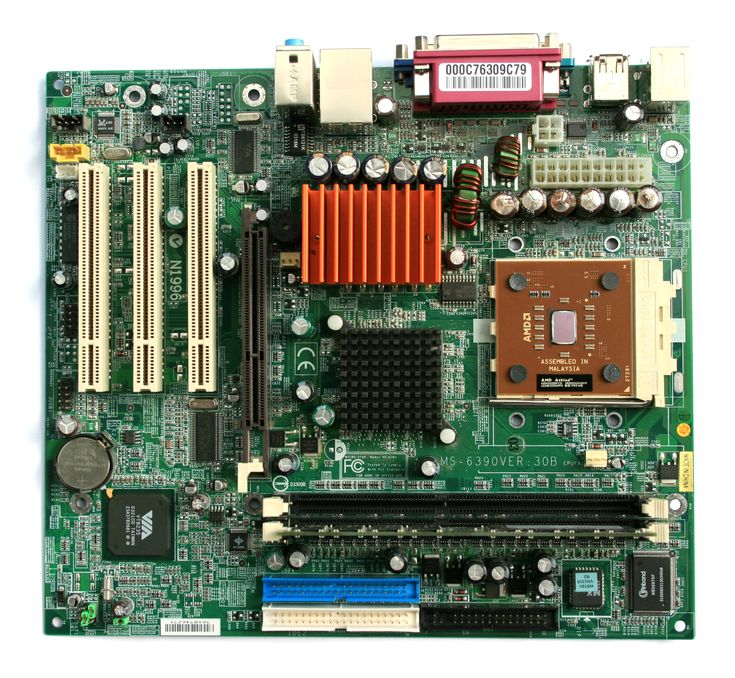
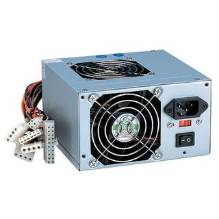
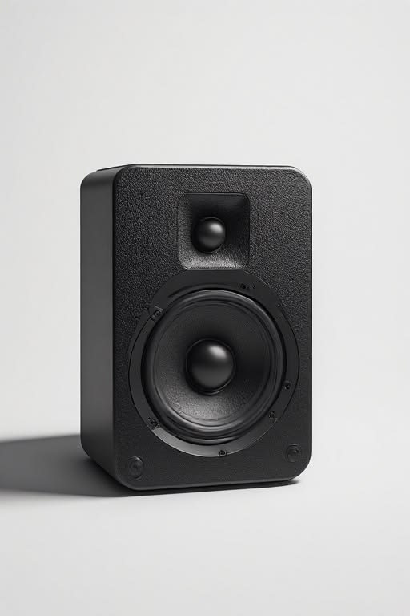
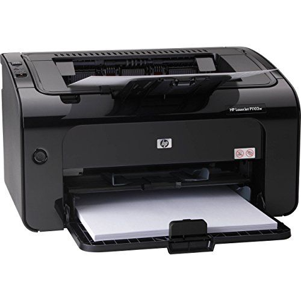

Parts of a Computer

monitor
- Displays text, images, videos, and other information from the computer.
- it is an output device.

CPU (Central Processing Unit)
- called the brain of the computer.
- processes information and controls other parts of the computer.
- main parts include ALU,Control Unit (CU) and registers.

keyboard
- Used to enter letters, numbers, symbols, and commands.
- it is an input device.

Mouse
- Used to move the pointer, select items, open files, and interact with the screen.
- it is an input device.

RAM (Random Access Memory)
- Temporarily stores data and programs that the CPU is currently using.
- It is volatile, meaning its contents are lost when the computer is turned off.

Storage Device
- Stores data, programs, photos, videos, and files permanently.
- Examples: HDD (Hard Disk Drive) and SSD (Solid State Drive).

Motherboard
- The main circuit board of a computer.
- Connects the CPU, RAM, storage, and other components so they can communicate.

Power Supply Unit (PSU)
- Converts electricity from the power outlet into the required power for computer components.

Speaker
- Produce sound from the computer.
- They are output devices.

Printer
- Produces a physical copy of digital documents or images.
- it is an output device